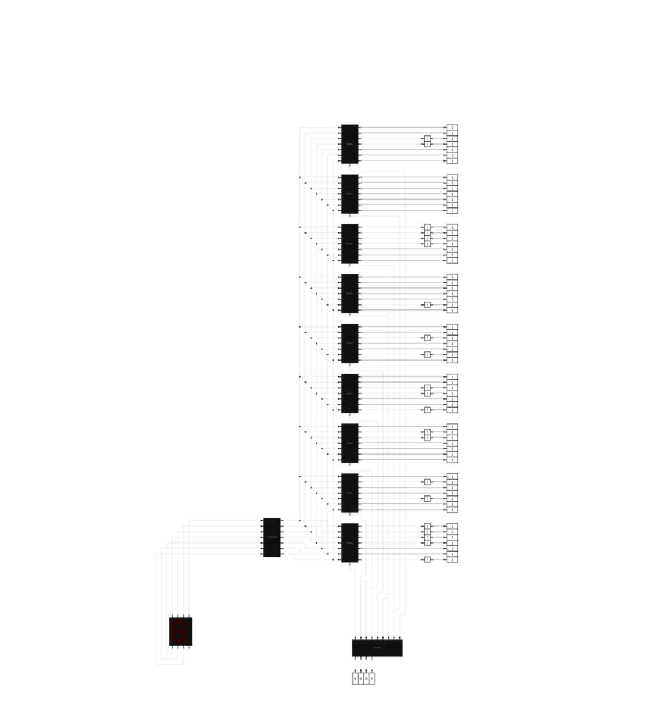
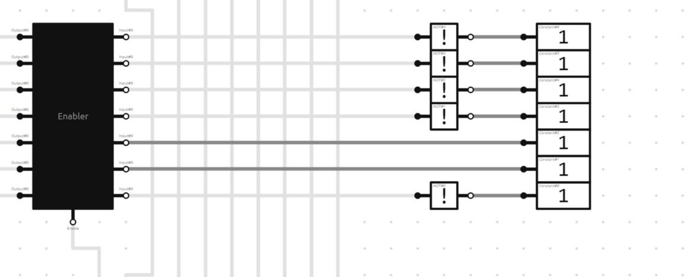
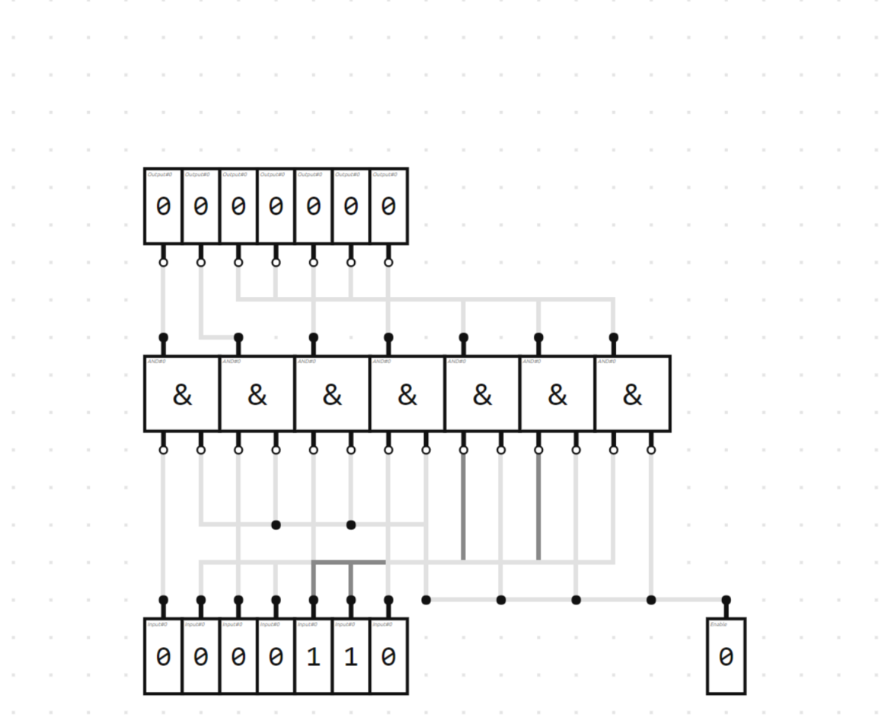
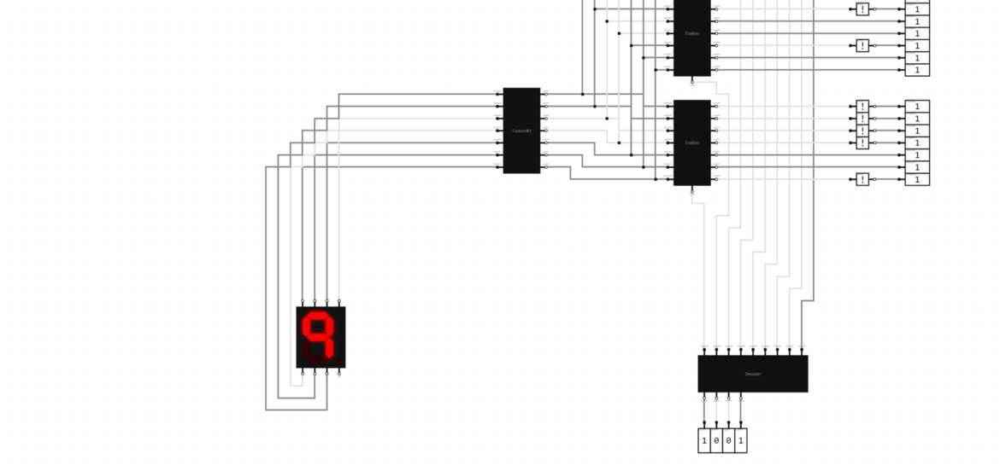

CONCEPT
This is a pretty simple contrapition which takes in a binary single, decodes it and then displays a number of the 7 segment display that correlates with the inputted binary number.

HOW IT WORKS
This Circuit first takes in the 4 bit binary single and decodes it into 9 different lanes(one for each number. each lane correlates to one of the nine sections that you see below

Essentially, The inputted single serves as a enable line for whatever the block you see on the right. Each of the 7 lanes corresponds to one part of the 7 segment display, and every section you see of this has been programmed to match to a specific number. After the enable line is on, the signal gets sent directly to the 7 Segment display.

